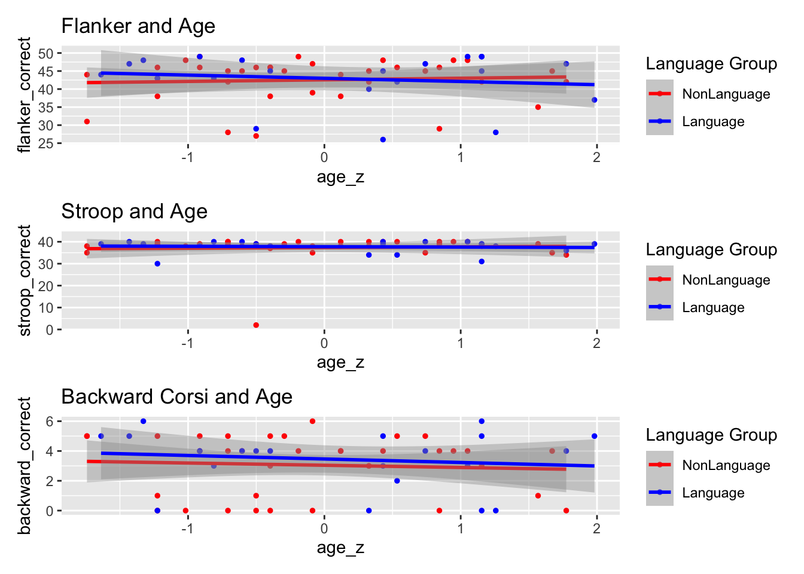
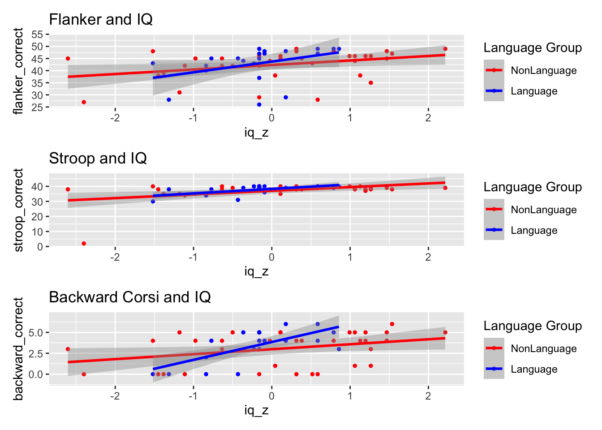
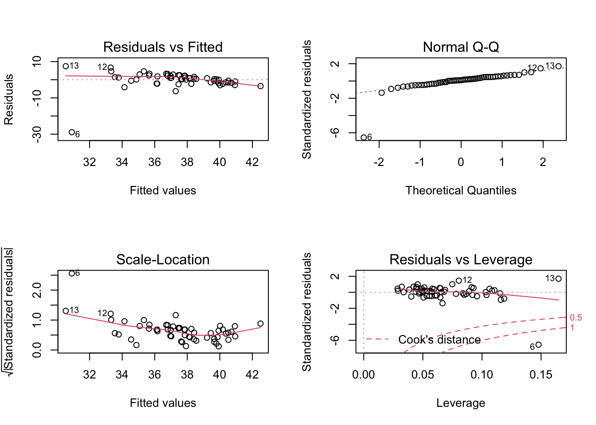
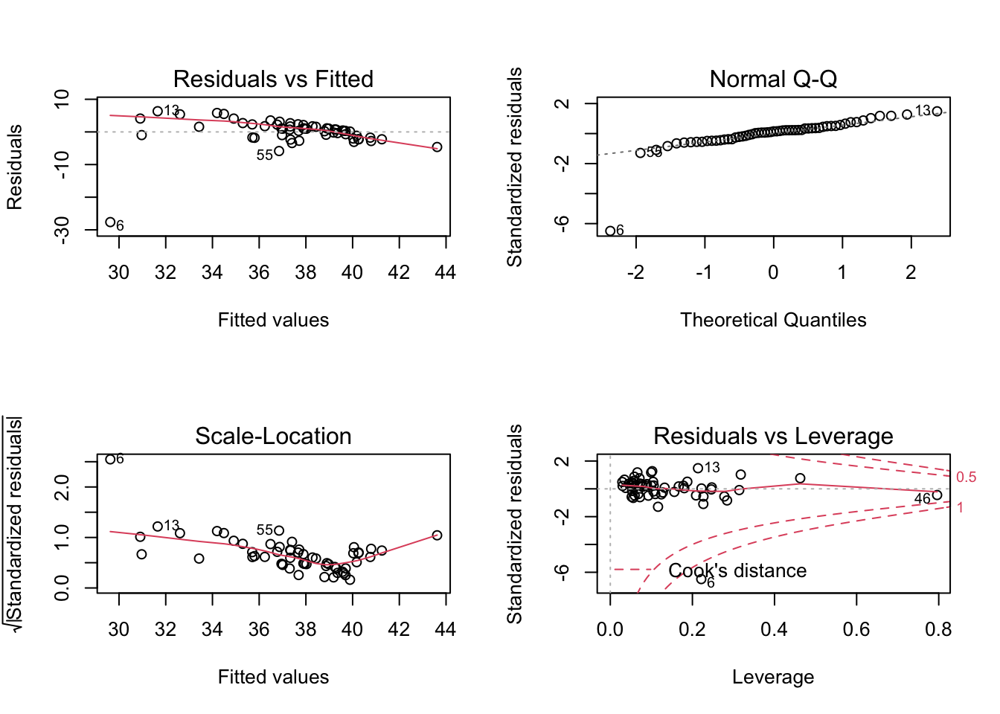
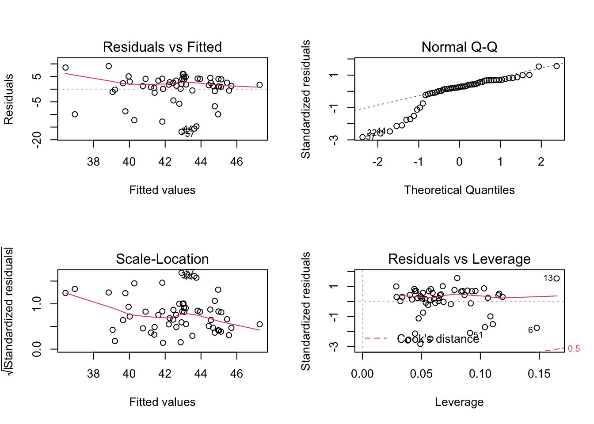
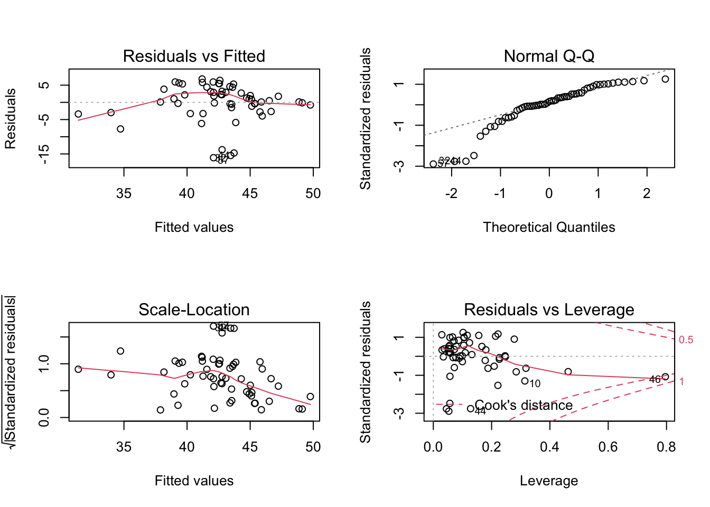
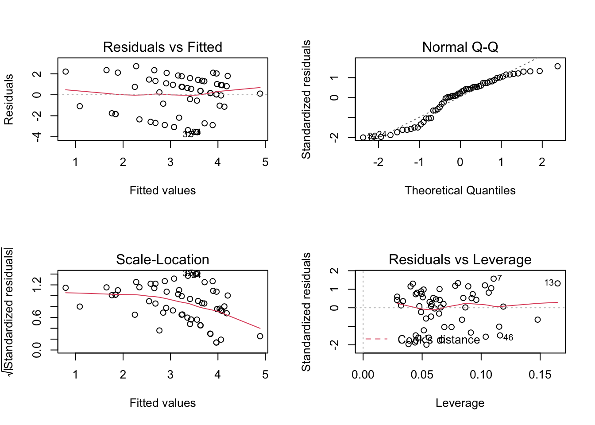
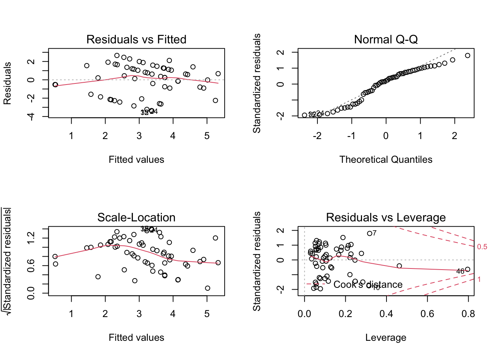
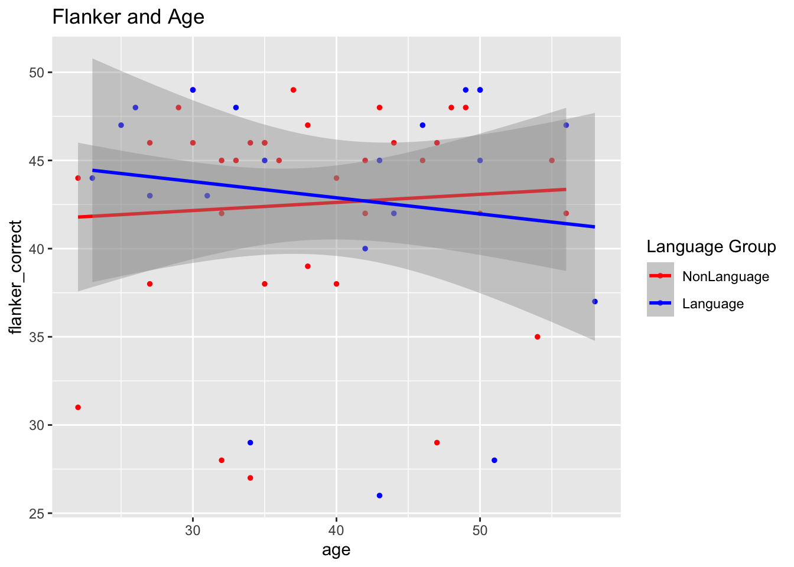
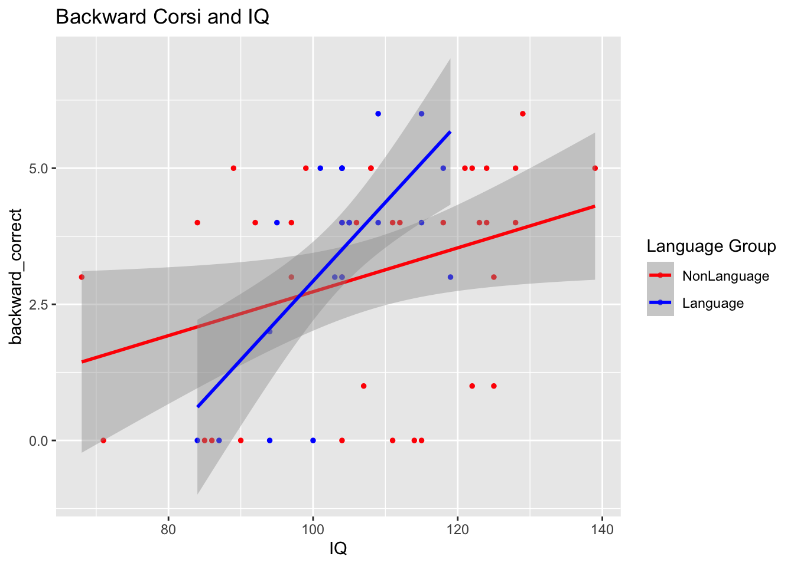

QP Data Analysis
Diana Sanchez
March 2023
rm(list = ls(all.names = TRUE)) #clear R environment
Load libraries
#Analysis of all_data ## Tidy all_data all_data df includes all 58 participants, two groups. Only total correct responses were included for each experimental task (flanker, stroop, backward). new_all_data excludes participant kbzo07 who was removed.
##Standardize Age and IQ
final_df = new_all_data %>% mutate(group_language = if_else(language == 'NonLanguage',-1,1),
age_z = (age - mean(age)) / sd(age),
iq_z = (IQ - mean(IQ)) / sd(IQ))
final_df## participant age IQ backward_correct flanker_correct stroop_correct
## 1 adnm2 36 128 5 45 39
## 2 bjfc1 40 106 4 44 38
## 3 buzt0 30 139 5 49 39
## 4 bwat2 34 122 1 46 39
## 5 cbky9 49 128 4 48 40
## 6 cfug6 34 71 0 27 2
## 7 dhnz3 22 89 5 31 35
## 8 ejpg7 32 99 5 42 39
## 9 fesx6 33 112 4 45 38
## 10 fgrl2 54 125 1 35 39
## 11 fjfm3 35 124 5 46 37
## 12 hqlv9 43 84 4 48 40
## 13 iwzp1 42 68 3 45 38
## 14 jhoh9 48 118 4 48 40
## 15 keta9 27 114 0 43 39
## 16 kryd6 55 92 4 45 35
## 17 mnwx7 27 108 5 46 40
## 18 myyl9 27 107 1 38 38
## 19 nvko1 22 122 5 44 38
## 20 onbv9 50 97 3 42 38
## 21 ottj9 38 129 6 47 38
## 22 oucx8 47 104 0 29 39
## 23 phww7 42 104 3 42 40
## 24 pqvt6 29 111 0 48 38
## 25 qeiy3 56 90 0 42 34
## 26 qsry8 46 108 5 45 35
## 27 rdix8 38 86 0 39 35
## 28 ruvk3 35 125 3 46 38
## 29 tlit0 47 104 4 46 40
## 30 tyfi7 35 85 0 38 38
## 31 vqpg1 44 121 5 46 40
## 32 vvpq4 32 115 0 28 40
## 33 wbje4 40 123 4 38 40
## 34 wldp0 32 97 4 45 40
## 35 wyks1 37 111 4 49 40
## 36 yrtb9 30 124 4 46 38
## 37 bi_ajli0 35 95 4 45 38
## 38 bi_dckv1 30 104 4 49 38
## 39 bi_dvyf7 58 104 5 37 39
## 40 bi_evur7 42 94 0 40 34
## 41 bi_giah0 23 101 5 44 39
## 42 bi_igsy3 50 115 6 49 39
## 43 bi_iizs0 25 104 5 47 40
## 44 bi_jdyf0 34 109 4 29 39
## 45 bi_khem3 26 109 6 48 39
## 46 bi_kxzm6 27 84 0 43 30
## 47 bi_nxqq4 56 105 4 47 36
## 48 bi_qjrz9 43 104 5 45 40
## 49 bi_rftj7 44 94 2 42 34
## 50 bi_sgmf1 46 115 4 47 40
## 51 bi_txmo8 51 87 0 28 38
## 52 bi_vpgq2 33 105 4 48 40
## 53 bi_wdfj3 31 103 3 43 40
## 54 bi_wetx1 49 119 3 49 40
## 55 bi_xcix4 50 100 0 45 31
## 56 bi_ycdf0 50 118 5 49 39
## 57 bi_zefa9 43 104 3 26 39
## language group_language age_z iq_z
## 1 NonLanguage -1 -0.29393535 1.46825014
## 2 NonLanguage -1 0.11975144 -0.02500669
## 3 NonLanguage -1 -0.91446553 2.21487856
## 4 NonLanguage -1 -0.50077874 1.06099828
## 5 NonLanguage -1 1.05054671 1.46825014
## 6 NonLanguage -1 -0.50077874 -2.40064257
## 7 NonLanguage -1 -1.74183910 -1.17888698
## 8 NonLanguage -1 -0.70762213 -0.50013387
## 9 NonLanguage -1 -0.60420044 0.38224517
## 10 NonLanguage -1 1.56765519 1.26462421
## 11 NonLanguage -1 -0.39735704 1.19674890
## 12 NonLanguage -1 0.43001653 -1.51826353
## 13 NonLanguage -1 0.32659483 -2.60426850
## 14 NonLanguage -1 0.94712501 0.78949704
## 15 NonLanguage -1 -1.22473062 0.51799579
## 16 NonLanguage -1 1.67107688 -0.97526104
## 17 NonLanguage -1 -1.22473062 0.11074393
## 18 NonLanguage -1 -1.22473062 0.04286862
## 19 NonLanguage -1 -1.74183910 1.06099828
## 20 NonLanguage -1 1.15396840 -0.63588449
## 21 NonLanguage -1 -0.08709195 1.53612545
## 22 NonLanguage -1 0.84370331 -0.16075731
## 23 NonLanguage -1 0.32659483 -0.16075731
## 24 NonLanguage -1 -1.01788722 0.31436986
## 25 NonLanguage -1 1.77449858 -1.11101166
## 26 NonLanguage -1 0.74028162 0.11074393
## 27 NonLanguage -1 -0.08709195 -1.38251291
## 28 NonLanguage -1 -0.39735704 1.26462421
## 29 NonLanguage -1 0.84370331 -0.16075731
## 30 NonLanguage -1 -0.39735704 -1.45038822
## 31 NonLanguage -1 0.53343822 0.99312297
## 32 NonLanguage -1 -0.70762213 0.58587110
## 33 NonLanguage -1 0.11975144 1.12887359
## 34 NonLanguage -1 -0.70762213 -0.63588449
## 35 NonLanguage -1 -0.19051365 0.31436986
## 36 NonLanguage -1 -0.91446553 1.19674890
## 37 Language 1 -0.39735704 -0.77163511
## 38 Language 1 -0.91446553 -0.16075731
## 39 Language 1 1.98134197 -0.16075731
## 40 Language 1 0.32659483 -0.83951042
## 41 Language 1 -1.63841740 -0.36438325
## 42 Language 1 1.15396840 0.58587110
## 43 Language 1 -1.43157401 -0.16075731
## 44 Language 1 -0.50077874 0.17861924
## 45 Language 1 -1.32815231 0.17861924
## 46 Language 1 -1.22473062 -1.51826353
## 47 Language 1 1.77449858 -0.09288200
## 48 Language 1 0.43001653 -0.16075731
## 49 Language 1 0.53343822 -0.83951042
## 50 Language 1 0.74028162 0.58587110
## 51 Language 1 1.25739010 -1.31463760
## 52 Language 1 -0.60420044 -0.09288200
## 53 Language 1 -0.81104383 -0.22863263
## 54 Language 1 1.05054671 0.85737235
## 55 Language 1 1.15396840 -0.43225856
## 56 Language 1 1.15396840 0.78949704
## 57 Language 1 0.43001653 -0.16075731colnames(final_df)[7]='Bilingual'MODELS UPDATED March 27
STROOP: Regression and Nested Model Comparison
mod_0 <- lm(stroop_correct ~ group_language, final_df)
summary(mod_0)##
## Call:
## lm(formula = stroop_correct ~ group_language, data = final_df)
##
## Residuals:
## Min 1Q Median 3Q Max
## -35.333 0.286 1.286 2.286 2.667
##
## Coefficients:
## Estimate Std. Error t value Pr(>|t|)
## (Intercept) 37.5238 0.7317 51.28 <2e-16 ***
## group_language 0.1905 0.7317 0.26 0.796
## ---
## Signif. codes: 0 '***' 0.001 '**' 0.01 '*' 0.05 '.' 0.1 ' ' 1
##
## Residual standard error: 5.33 on 55 degrees of freedom
## Multiple R-squared: 0.001231, Adjusted R-squared: -0.01693
## F-statistic: 0.06776 on 1 and 55 DF, p-value: 0.7956AIC(mod_0) # 356.4777## [1] 356.4777BIC(mod_0) # 362.6068## [1] 362.6068mod_1 <- lm(stroop_correct ~ group_language + age, final_df)
summary(mod_1)##
## Call:
## lm(formula = stroop_correct ~ group_language + age, data = final_df)
##
## Residuals:
## Min 1Q Median 3Q Max
## -35.298 0.377 1.200 2.262 2.764
##
## Coefficients:
## Estimate Std. Error t value Pr(>|t|)
## (Intercept) 37.177451 3.020445 12.309 <2e-16 ***
## group_language 0.180364 0.743305 0.243 0.809
## age 0.008849 0.074823 0.118 0.906
## ---
## Signif. codes: 0 '***' 0.001 '**' 0.01 '*' 0.05 '.' 0.1 ' ' 1
##
## Residual standard error: 5.378 on 54 degrees of freedom
## Multiple R-squared: 0.001489, Adjusted R-squared: -0.03549
## F-statistic: 0.04027 on 2 and 54 DF, p-value: 0.9606AIC(mod_1) # 358.4629## [1] 358.4629BIC(mod_1) # 366.6351## [1] 366.6351mod_2 <- lm(stroop_correct ~ group_language + age + IQ, final_df)
summary(mod_2)##
## Call:
## lm(formula = stroop_correct ~ group_language + age + IQ, data = final_df)
##
## Residuals:
## Min 1Q Median 3Q Max
## -28.9090 -1.4450 0.4483 2.1517 7.4656
##
## Coefficients:
## Estimate Std. Error t value Pr(>|t|)
## (Intercept) 18.70273 5.44145 3.437 0.001152 **
## group_language 0.56315 0.66843 0.842 0.403296
## age 0.01747 0.06660 0.262 0.794037
## IQ 0.17148 0.04392 3.904 0.000269 ***
## ---
## Signif. codes: 0 '***' 0.001 '**' 0.01 '*' 0.05 '.' 0.1 ' ' 1
##
## Residual standard error: 4.784 on 53 degrees of freedom
## Multiple R-squared: 0.2245, Adjusted R-squared: 0.1806
## F-statistic: 5.115 on 3 and 53 DF, p-value: 0.003503AIC(mod_2) # 346.0536## [1] 346.0536BIC(mod_2) # 356.2689## [1] 356.2689mod_3 <- lm(stroop_correct ~ group_language * age * IQ, final_df)
summary(mod_3)##
## Call:
## lm(formula = stroop_correct ~ group_language * age * IQ, data = final_df)
##
## Residuals:
## Min 1Q Median 3Q Max
## -27.6266 -1.7107 0.6951 1.7593 6.3461
##
## Coefficients:
## Estimate Std. Error t value Pr(>|t|)
## (Intercept) -22.789725 30.619913 -0.744 0.4603
## group_language -12.061929 30.619913 -0.394 0.6953
## age 0.974615 0.720499 1.353 0.1824
## IQ 0.575661 0.296325 1.943 0.0578 .
## group_language:age 0.200318 0.720499 0.278 0.7822
## group_language:IQ 0.154686 0.296325 0.522 0.6040
## age:IQ -0.009293 0.006928 -1.341 0.1860
## group_language:age:IQ -0.002723 0.006928 -0.393 0.6960
## ---
## Signif. codes: 0 '***' 0.001 '**' 0.01 '*' 0.05 '.' 0.1 ' ' 1
##
## Residual standard error: 4.825 on 49 degrees of freedom
## Multiple R-squared: 0.2707, Adjusted R-squared: 0.1665
## F-statistic: 2.598 on 7 and 49 DF, p-value: 0.02313AIC(mod_3) # 350.5537## [1] 350.5537BIC(mod_3) # 368.9412## [1] 368.9412mod_4 <- lm(stroop_correct ~ group_language * age_z * iq_z, final_df)
summary(mod_4)##
## Call:
## lm(formula = stroop_correct ~ group_language * age_z * iq_z,
## data = final_df)
##
## Residuals:
## Min 1Q Median 3Q Max
## -27.6266 -1.7107 0.6951 1.7593 6.3461
##
## Coefficients:
## Estimate Std. Error t value Pr(>|t|)
## (Intercept) 37.9039 0.7266 52.165 < 2e-16 ***
## group_language 0.9240 0.7266 1.272 0.20950
## age_z -0.1341 0.6989 -0.192 0.84867
## iq_z 3.1632 1.0117 3.127 0.00297 **
## group_language:age_z -0.8632 0.6989 -1.235 0.22264
## group_language:iq_z 0.7210 1.0117 0.713 0.47945
## age_z:iq_z -1.3238 0.9869 -1.341 0.18597
## group_language:age_z:iq_z -0.3878 0.9869 -0.393 0.69602
## ---
## Signif. codes: 0 '***' 0.001 '**' 0.01 '*' 0.05 '.' 0.1 ' ' 1
##
## Residual standard error: 4.825 on 49 degrees of freedom
## Multiple R-squared: 0.2707, Adjusted R-squared: 0.1665
## F-statistic: 2.598 on 7 and 49 DF, p-value: 0.02313AIC(mod_4) # 350.5537## [1] 350.5537BIC(mod_4) # 368.9412## [1] 368.9412anova(mod_2,mod_3) # Model 2 significant## Analysis of Variance Table
##
## Model 1: stroop_correct ~ group_language + age + IQ
## Model 2: stroop_correct ~ group_language * age * IQ
## Res.Df RSS Df Sum of Sq F Pr(>F)
## 1 53 1213.0
## 2 49 1140.8 4 72.239 0.7757 0.5463anova(mod_1,mod_2) # Model 2 significant## Analysis of Variance Table
##
## Model 1: stroop_correct ~ group_language + age
## Model 2: stroop_correct ~ group_language + age + IQ
## Res.Df RSS Df Sum of Sq F Pr(>F)
## 1 54 1561.9
## 2 53 1213.0 1 348.88 15.244 0.000269 ***
## ---
## Signif. codes: 0 '***' 0.001 '**' 0.01 '*' 0.05 '.' 0.1 ' ' 1anova(mod_0,mod_1) # Model 1 significant## Analysis of Variance Table
##
## Model 1: stroop_correct ~ group_language
## Model 2: stroop_correct ~ group_language + age
## Res.Df RSS Df Sum of Sq F Pr(>F)
## 1 55 1562.3
## 2 54 1561.9 1 0.40451 0.014 0.9063anova(mod_3, mod_4)## Analysis of Variance Table
##
## Model 1: stroop_correct ~ group_language * age * IQ
## Model 2: stroop_correct ~ group_language * age_z * iq_z
## Res.Df RSS Df Sum of Sq F Pr(>F)
## 1 49 1140.8
## 2 49 1140.8 0 -6.8212e-13models = list(mod_0, mod_1, mod_2, mod_3, mod_4) # put models in a list
model.names = c('model 0','model 1', 'model 2', 'model 3', 'model 4') # named models for the AIC table
aictab(cand.set = models, modnames = model.names)##
## Model selection based on AICc:
##
## K AICc Delta_AICc AICcWt Cum.Wt LL
## model 2 5 347.23 0.00 0.94 0.94 -168.03
## model 3 9 354.38 7.15 0.03 0.96 -166.28
## model 4 9 354.38 7.15 0.03 0.99 -166.28
## model 0 3 356.93 9.70 0.01 1.00 -175.24
## model 1 4 359.23 12.00 0.00 1.00 -175.23##It states that Model 2 is the best for StroopFLANKER: Regression and Nested Model Comparison
mod_5 <- lm(flanker_correct ~ group_language, final_df)
summary(mod_5)##
## Call:
## lm(formula = flanker_correct ~ group_language, data = final_df)
##
## Residuals:
## Min 1Q Median 3Q Max
## -16.8571 -0.8571 2.4722 4.1429 6.4722
##
## Coefficients:
## Estimate Std. Error t value Pr(>|t|)
## (Intercept) 42.6925 0.8800 48.515 <2e-16 ***
## group_language 0.1647 0.8800 0.187 0.852
## ---
## Signif. codes: 0 '***' 0.001 '**' 0.01 '*' 0.05 '.' 0.1 ' ' 1
##
## Residual standard error: 6.41 on 55 degrees of freedom
## Multiple R-squared: 0.0006364, Adjusted R-squared: -0.01753
## F-statistic: 0.03502 on 1 and 55 DF, p-value: 0.8522AIC(mod_5) # 356.4777## [1] 377.5114BIC(mod_5) # 362.6068## [1] 383.6406mod_6 <- lm(flanker_correct ~ group_language + age, final_df)
summary(mod_6)##
## Call:
## lm(formula = flanker_correct ~ group_language + age, data = final_df)
##
## Residuals:
## Min 1Q Median 3Q Max
## -16.8140 -0.7981 2.3768 4.2337 6.4563
##
## Coefficients:
## Estimate Std. Error t value Pr(>|t|)
## (Intercept) 43.31482 3.63188 11.926 <2e-16 ***
## group_language 0.18285 0.89377 0.205 0.839
## age -0.01590 0.08997 -0.177 0.860
## ---
## Signif. codes: 0 '***' 0.001 '**' 0.01 '*' 0.05 '.' 0.1 ' ' 1
##
## Residual standard error: 6.467 on 54 degrees of freedom
## Multiple R-squared: 0.001214, Adjusted R-squared: -0.03578
## F-statistic: 0.03282 on 2 and 54 DF, p-value: 0.9677AIC(mod_6) # 379.4784## [1] 379.4784BIC(mod_6) # 387.6507## [1] 387.6507mod_7 <- lm(flanker_correct ~ group_language + age + IQ, final_df)
summary(mod_7)##
## Call:
## lm(formula = flanker_correct ~ group_language + age + IQ, data = final_df)
##
## Residuals:
## Min 1Q Median 3Q Max
## -16.9139 -0.5606 1.5643 3.9369 9.1517
##
## Coefficients:
## Estimate Std. Error t value Pr(>|t|)
## (Intercept) 27.021740 6.964197 3.880 0.000291 ***
## group_language 0.520437 0.855482 0.608 0.545551
## age -0.008293 0.085231 -0.097 0.922856
## IQ 0.151233 0.056212 2.690 0.009524 **
## ---
## Signif. codes: 0 '***' 0.001 '**' 0.01 '*' 0.05 '.' 0.1 ' ' 1
##
## Residual standard error: 6.123 on 53 degrees of freedom
## Multiple R-squared: 0.1212, Adjusted R-squared: 0.07149
## F-statistic: 2.437 on 3 and 53 DF, p-value: 0.07474AIC(mod_7) # 374.1816## [1] 374.1816BIC(mod_7) # 384.3969## [1] 384.3969mod_8 <- lm(flanker_correct ~ group_language * age * IQ, final_df)
summary(mod_8)##
## Call:
## lm(formula = flanker_correct ~ group_language * age * IQ, data = final_df)
##
## Residuals:
## Min 1Q Median 3Q Max
## -16.0944 -1.5240 0.8959 3.2258 6.8063
##
## Coefficients:
## Estimate Std. Error t value Pr(>|t|)
## (Intercept) 47.303602 36.297380 1.303 0.19859
## group_language 86.109780 36.297380 2.372 0.02165 *
## age -0.611744 0.854092 -0.716 0.47724
## IQ -0.048970 0.351268 -0.139 0.88970
## group_language:age -2.365246 0.854092 -2.769 0.00791 **
## group_language:IQ -0.778547 0.351268 -2.216 0.03134 *
## age:IQ 0.005878 0.008212 0.716 0.47754
## group_language:age:IQ 0.021571 0.008212 2.627 0.01147 *
## ---
## Signif. codes: 0 '***' 0.001 '**' 0.01 '*' 0.05 '.' 0.1 ' ' 1
##
## Residual standard error: 5.72 on 49 degrees of freedom
## Multiple R-squared: 0.291, Adjusted R-squared: 0.1897
## F-statistic: 2.873 on 7 and 49 DF, p-value: 0.01353AIC(mod_8) # 369.9446## [1] 369.9446BIC(mod_8) # 388.332## [1] 388.332mod_9 <- lm(flanker_correct ~ group_language * age_z * iq_z, final_df)
summary(mod_9)##
## Call:
## lm(formula = flanker_correct ~ group_language * age_z * iq_z,
## data = final_df)
##
## Residuals:
## Min 1Q Median 3Q Max
## -16.0944 -1.5240 0.8959 3.2258 6.8063
##
## Coefficients:
## Estimate Std. Error t value Pr(>|t|)
## (Intercept) 42.6182 0.8613 49.479 <2e-16 ***
## group_language 0.5499 0.8613 0.638 0.5262
## age_z 0.1303 0.8284 0.157 0.8757
## iq_z 2.6422 1.1993 2.203 0.0323 *
## group_language:age_z -0.6838 0.8284 -0.825 0.4131
## group_language:iq_z 0.8742 1.1993 0.729 0.4695
## age_z:iq_z 0.8373 1.1699 0.716 0.4775
## group_language:age_z:iq_z 3.0730 1.1699 2.627 0.0115 *
## ---
## Signif. codes: 0 '***' 0.001 '**' 0.01 '*' 0.05 '.' 0.1 ' ' 1
##
## Residual standard error: 5.72 on 49 degrees of freedom
## Multiple R-squared: 0.291, Adjusted R-squared: 0.1897
## F-statistic: 2.873 on 7 and 49 DF, p-value: 0.01353AIC(mod_9) # 369.9446## [1] 369.9446BIC(mod_9) # 388.332## [1] 388.332anova(mod_7,mod_8) # Model 8 significant## Analysis of Variance Table
##
## Model 1: flanker_correct ~ group_language + age + IQ
## Model 2: flanker_correct ~ group_language * age * IQ
## Res.Df RSS Df Sum of Sq F Pr(>F)
## 1 53 1986.9
## 2 49 1603.0 4 383.88 2.9335 0.02979 *
## ---
## Signif. codes: 0 '***' 0.001 '**' 0.01 '*' 0.05 '.' 0.1 ' ' 1anova(mod_6,mod_7) # Model 7 significant## Analysis of Variance Table
##
## Model 1: flanker_correct ~ group_language + age
## Model 2: flanker_correct ~ group_language + age + IQ
## Res.Df RSS Df Sum of Sq F Pr(>F)
## 1 54 2258.2
## 2 53 1986.9 1 271.35 7.2382 0.009524 **
## ---
## Signif. codes: 0 '***' 0.001 '**' 0.01 '*' 0.05 '.' 0.1 ' ' 1anova(mod_5,mod_6) # Model 5 significant## Analysis of Variance Table
##
## Model 1: flanker_correct ~ group_language
## Model 2: flanker_correct ~ group_language + age
## Res.Df RSS Df Sum of Sq F Pr(>F)
## 1 55 2259.5
## 2 54 2258.2 1 1.306 0.0312 0.8604anova(mod_8, mod_9) # this has the standerdized scores## Analysis of Variance Table
##
## Model 1: flanker_correct ~ group_language * age * IQ
## Model 2: flanker_correct ~ group_language * age_z * iq_z
## Res.Df RSS Df Sum of Sq F Pr(>F)
## 1 49 1603
## 2 49 1603 0 1.3642e-12models = list(mod_5, mod_6, mod_7, mod_8, mod_9) # put models in a list
model.names = c('model 5','model 6', 'model 7', 'model 8', 'model 9') # named models for the AIC table
aictab(cand.set = models, modnames = model.names)##
## Model selection based on AICc:
##
## K AICc Delta_AICc AICcWt Cum.Wt LL
## model 9 9 373.77 0.00 0.38 0.38 -175.97
## model 8 9 373.77 0.00 0.38 0.76 -175.97
## model 7 5 375.36 1.58 0.17 0.94 -182.09
## model 5 3 377.96 4.19 0.05 0.98 -185.76
## model 6 4 380.25 6.47 0.02 1.00 -185.74##It states that Model 8, 9 is the best for Flanker (9 is the standarized model)BACKWARD: Regression and Nested Model Comparison
mod_10 <- lm(backward_correct ~ group_language, final_df)
summary(mod_10)##
## Call:
## lm(formula = backward_correct ~ group_language, data = final_df)
##
## Residuals:
## Min 1Q Median 3Q Max
## -3.4286 -2.0556 0.5714 1.5714 2.9444
##
## Coefficients:
## Estimate Std. Error t value Pr(>|t|)
## (Intercept) 3.2421 0.2727 11.888 <2e-16 ***
## group_language 0.1865 0.2727 0.684 0.497
## ---
## Signif. codes: 0 '***' 0.001 '**' 0.01 '*' 0.05 '.' 0.1 ' ' 1
##
## Residual standard error: 1.986 on 55 degrees of freedom
## Multiple R-squared: 0.008431, Adjusted R-squared: -0.009597
## F-statistic: 0.4677 on 1 and 55 DF, p-value: 0.4969AIC(mod_10) # 243.9676## [1] 243.9676BIC(mod_10) # 250.0967## [1] 250.0967mod_11 <- lm(backward_correct ~ group_language + age, final_df)
summary(mod_11)##
## Call:
## lm(formula = backward_correct ~ group_language + age, data = final_df)
##
## Residuals:
## Min 1Q Median 3Q Max
## -3.6872 -1.7441 0.7887 1.6243 2.9444
##
## Coefficients:
## Estimate Std. Error t value Pr(>|t|)
## (Intercept) 4.00405 1.12083 3.572 0.000754 ***
## group_language 0.20876 0.27583 0.757 0.452438
## age -0.01947 0.02777 -0.701 0.486243
## ---
## Signif. codes: 0 '***' 0.001 '**' 0.01 '*' 0.05 '.' 0.1 ' ' 1
##
## Residual standard error: 1.996 on 54 degrees of freedom
## Multiple R-squared: 0.01738, Adjusted R-squared: -0.01902
## F-statistic: 0.4775 on 2 and 54 DF, p-value: 0.623AIC(mod_11) # 245.451## [1] 245.451BIC(mod_11) # 253.6232## [1] 253.6232mod_12 <- lm(backward_correct ~ group_language + age + IQ, final_df)
summary(mod_12)##
## Call:
## lm(formula = backward_correct ~ group_language + age + IQ, data = final_df)
##
## Residuals:
## Min 1Q Median 3Q Max
## -3.5658 -1.1355 0.3708 1.3338 2.7237
##
## Coefficients:
## Estimate Std. Error t value Pr(>|t|)
## (Intercept) -1.91247 2.09202 -0.914 0.36477
## group_language 0.33134 0.25698 1.289 0.20287
## age -0.01670 0.02560 -0.652 0.51694
## IQ 0.05492 0.01689 3.252 0.00199 **
## ---
## Signif. codes: 0 '***' 0.001 '**' 0.01 '*' 0.05 '.' 0.1 ' ' 1
##
## Residual standard error: 1.839 on 53 degrees of freedom
## Multiple R-squared: 0.1809, Adjusted R-squared: 0.1345
## F-statistic: 3.9 on 3 and 53 DF, p-value: 0.01365AIC(mod_12) # 237.0792## [1] 237.0792BIC(mod_12) # 247.2945## [1] 247.2945mod_13 <- lm(backward_correct ~ group_language * age * IQ, final_df)
summary(mod_13)##
## Call:
## lm(formula = backward_correct ~ group_language * age * IQ, data = final_df)
##
## Residuals:
## Min 1Q Median 3Q Max
## -3.3708 -0.9030 0.3664 1.2865 2.6573
##
## Coefficients:
## Estimate Std. Error t value Pr(>|t|)
## (Intercept) -1.055e+01 1.138e+01 -0.927 0.359
## group_language -8.932e+00 1.138e+01 -0.785 0.436
## age 7.971e-02 2.678e-01 0.298 0.767
## IQ 1.444e-01 1.101e-01 1.311 0.196
## group_language:age 7.043e-02 2.678e-01 0.263 0.794
## group_language:IQ 9.915e-02 1.101e-01 0.900 0.372
## age:IQ -1.066e-03 2.575e-03 -0.414 0.681
## group_language:age:IQ -9.257e-04 2.575e-03 -0.360 0.721
##
## Residual standard error: 1.793 on 49 degrees of freedom
## Multiple R-squared: 0.2801, Adjusted R-squared: 0.1773
## F-statistic: 2.724 on 7 and 49 DF, p-value: 0.01811AIC(mod_13) # 237.716## [1] 237.716BIC(mod_13) # 256.1034## [1] 256.1034mod_14 <- lm(backward_correct ~ group_language * age_z * iq_z, final_df)
summary(mod_14)##
## Call:
## lm(formula = backward_correct ~ group_language * age_z * iq_z,
## data = final_df)
##
## Residuals:
## Min 1Q Median 3Q Max
## -3.3708 -0.9030 0.3664 1.2865 2.6573
##
## Coefficients:
## Estimate Std. Error t value Pr(>|t|)
## (Intercept) 3.5063 0.2700 12.984 < 2e-16 ***
## group_language 0.5255 0.2700 1.946 0.05741 .
## age_z -0.3252 0.2597 -1.252 0.21655
## iq_z 1.5175 0.3760 4.036 0.00019 ***
## group_language:age_z -0.2711 0.2597 -1.044 0.30168
## group_language:iq_z 0.9311 0.3760 2.476 0.01678 *
## age_z:iq_z -0.1518 0.3668 -0.414 0.68080
## group_language:age_z:iq_z -0.1319 0.3668 -0.360 0.72073
## ---
## Signif. codes: 0 '***' 0.001 '**' 0.01 '*' 0.05 '.' 0.1 ' ' 1
##
## Residual standard error: 1.793 on 49 degrees of freedom
## Multiple R-squared: 0.2801, Adjusted R-squared: 0.1773
## F-statistic: 2.724 on 7 and 49 DF, p-value: 0.01811AIC(mod_14) # 237.716## [1] 237.716BIC(mod_14) # 256.1034## [1] 256.1034anova(mod_12,mod_13) # Model 12 significant## Analysis of Variance Table
##
## Model 1: backward_correct ~ group_language + age + IQ
## Model 2: backward_correct ~ group_language * age * IQ
## Res.Df RSS Df Sum of Sq F Pr(>F)
## 1 53 179.29
## 2 49 157.56 4 21.727 1.6892 0.1676anova(mod_11,mod_12) # Model 12 significant## Analysis of Variance Table
##
## Model 1: backward_correct ~ group_language + age
## Model 2: backward_correct ~ group_language + age + IQ
## Res.Df RSS Df Sum of Sq F Pr(>F)
## 1 54 215.07
## 2 53 179.29 1 35.781 10.577 0.001994 **
## ---
## Signif. codes: 0 '***' 0.001 '**' 0.01 '*' 0.05 '.' 0.1 ' ' 1anova(mod_10,mod_11) # Model 10 significant## Analysis of Variance Table
##
## Model 1: backward_correct ~ group_language
## Model 2: backward_correct ~ group_language + age
## Res.Df RSS Df Sum of Sq F Pr(>F)
## 1 55 217.03
## 2 54 215.07 1 1.9578 0.4916 0.4862anova(mod_13, mod_14) # this has the standerdized scores## Analysis of Variance Table
##
## Model 1: backward_correct ~ group_language * age * IQ
## Model 2: backward_correct ~ group_language * age_z * iq_z
## Res.Df RSS Df Sum of Sq F Pr(>F)
## 1 49 157.56
## 2 49 157.56 0 8.5265e-14models = list(mod_10, mod_11, mod_12, mod_13, mod_14) # put models in a list
model.names = c('model 10','model 11', 'model 12', 'model 13', 'model 14') # named models for the AIC table
aictab(cand.set = models, modnames = model.names)##
## Model selection based on AICc:
##
## K AICc Delta_AICc AICcWt Cum.Wt LL
## model 12 5 238.26 0.00 0.69 0.69 -113.54
## model 14 9 241.55 3.29 0.13 0.82 -109.86
## model 13 9 241.55 3.29 0.13 0.96 -109.86
## model 10 3 244.42 6.16 0.03 0.99 -118.98
## model 11 4 246.22 7.96 0.01 1.00 -118.73# It says model 12 is the best##Plots for standardized age and IQ.
plot1 <- final_df %>%
ggplot()+
aes(x = age_z, y=flanker_correct,color=factor(group_language))+
geom_point(size = 1) +
ggtitle("Flanker and Age") +
geom_smooth(method = "lm") +
labs(color = "Language Group")+
scale_color_manual(labels = c("NonLanguage","Language"),values = c("red","blue"))
plot2 <- final_df %>%
ggplot()+
aes(x = age_z, y=stroop_correct,color=factor(group_language))+
geom_point(size = 1) +
ggtitle("Stroop and Age") +
geom_smooth(method = "lm") +
labs(color = "Language Group")+
scale_color_manual(labels = c("NonLanguage","Language"),values = c("red","blue"))
plot3 <- final_df %>%
ggplot()+
aes(x = age_z, y=backward_correct,color=factor(group_language))+
geom_point(size = 1) +
ggtitle("Backward Corsi and Age") +
geom_smooth(method = "lm") +
labs(color = "Language Group")+
scale_color_manual(labels = c("NonLanguage","Language"),values = c("red","blue"))
library(patchwork)
#(plot1 + plot_spacer() + plot2) / (plot_spacer() + plot3 + plot_spacer())
plot1 / plot2 / plot3 ## `geom_smooth()` using formula 'y ~ x'
## `geom_smooth()` using formula 'y ~ x'
## `geom_smooth()` using formula 'y ~ x'
plot4 <- final_df %>%
ggplot()+
aes(x = iq_z, y=flanker_correct,color=factor(group_language))+
geom_point(size = 1) +
ggtitle("Flanker and IQ") +
geom_smooth(method = "lm") +
labs(color = "Language Group")+
scale_color_manual(labels = c("NonLanguage","Language"),values = c("red","blue"))
plot5 <- final_df %>%
ggplot()+
aes(x = iq_z, y=stroop_correct,color=factor(group_language))+
geom_point(size = 1) +
ggtitle("Stroop and IQ") +
geom_smooth(method = "lm") +
labs(color = "Language Group")+
scale_color_manual(labels = c("NonLanguage","Language"),values = c("red","blue"))
plot6 <- final_df %>%
ggplot()+
aes(x = iq_z, y=backward_correct,color=factor(group_language))+
geom_point(size = 1) +
ggtitle("Backward Corsi and IQ") +
geom_smooth(method = "lm") +
labs(color = "Language Group")+
scale_color_manual(labels = c("NonLanguage","Language"),values = c("red","blue"))
library(patchwork)
plot4 / plot5 / plot6## `geom_smooth()` using formula 'y ~ x'
## `geom_smooth()` using formula 'y ~ x'
## `geom_smooth()` using formula 'y ~ x'
plot_layout(ncol = 2)## $ncol
## [1] 2
##
## $nrow
## NULL
##
## $byrow
## NULL
##
## $widths
## NULL
##
## $heights
## NULL
##
## $guides
## NULL
##
## $tag_level
## NULL
##
## $design
## NULL
##
## attr(,"class")
## [1] "plot_layout"OLD DATA
m1 = lm(stroop_correct ~ group_language + age + IQ, final_df)
summary(m1) # 0.003503##
## Call:
## lm(formula = stroop_correct ~ group_language + age + IQ, data = final_df)
##
## Residuals:
## Min 1Q Median 3Q Max
## -28.9090 -1.4450 0.4483 2.1517 7.4656
##
## Coefficients:
## Estimate Std. Error t value Pr(>|t|)
## (Intercept) 18.70273 5.44145 3.437 0.001152 **
## group_language 0.56315 0.66843 0.842 0.403296
## age 0.01747 0.06660 0.262 0.794037
## IQ 0.17148 0.04392 3.904 0.000269 ***
## ---
## Signif. codes: 0 '***' 0.001 '**' 0.01 '*' 0.05 '.' 0.1 ' ' 1
##
## Residual standard error: 4.784 on 53 degrees of freedom
## Multiple R-squared: 0.2245, Adjusted R-squared: 0.1806
## F-statistic: 5.115 on 3 and 53 DF, p-value: 0.003503par(mfrow = c(2,2))
plot(m1) 
AIC(m1) #346.0536## [1] 346.0536BIC(m1) #356.2689## [1] 356.2689m2 = lm(stroop_correct ~ group_language * age * IQ, final_df)
summary(m2) # 0.02313##
## Call:
## lm(formula = stroop_correct ~ group_language * age * IQ, data = final_df)
##
## Residuals:
## Min 1Q Median 3Q Max
## -27.6266 -1.7107 0.6951 1.7593 6.3461
##
## Coefficients:
## Estimate Std. Error t value Pr(>|t|)
## (Intercept) -22.789725 30.619913 -0.744 0.4603
## group_language -12.061929 30.619913 -0.394 0.6953
## age 0.974615 0.720499 1.353 0.1824
## IQ 0.575661 0.296325 1.943 0.0578 .
## group_language:age 0.200318 0.720499 0.278 0.7822
## group_language:IQ 0.154686 0.296325 0.522 0.6040
## age:IQ -0.009293 0.006928 -1.341 0.1860
## group_language:age:IQ -0.002723 0.006928 -0.393 0.6960
## ---
## Signif. codes: 0 '***' 0.001 '**' 0.01 '*' 0.05 '.' 0.1 ' ' 1
##
## Residual standard error: 4.825 on 49 degrees of freedom
## Multiple R-squared: 0.2707, Adjusted R-squared: 0.1665
## F-statistic: 2.598 on 7 and 49 DF, p-value: 0.02313par(mfrow = c(2,2))
plot(m2) 
AIC(m2) # 350.5537## [1] 350.5537BIC(m2) # 368.9412## [1] 368.9412# #Based on this output, we see that the AIC and BIC statistics are close but lower for m1 than for m2. This implies that the model fits are sufficiently close that neither can be preferred over the other.
m3 = lm(stroop_correct~group_language * age_z * iq_z, final_df)
summary(m3) # 0.02313##
## Call:
## lm(formula = stroop_correct ~ group_language * age_z * iq_z,
## data = final_df)
##
## Residuals:
## Min 1Q Median 3Q Max
## -27.6266 -1.7107 0.6951 1.7593 6.3461
##
## Coefficients:
## Estimate Std. Error t value Pr(>|t|)
## (Intercept) 37.9039 0.7266 52.165 < 2e-16 ***
## group_language 0.9240 0.7266 1.272 0.20950
## age_z -0.1341 0.6989 -0.192 0.84867
## iq_z 3.1632 1.0117 3.127 0.00297 **
## group_language:age_z -0.8632 0.6989 -1.235 0.22264
## group_language:iq_z 0.7210 1.0117 0.713 0.47945
## age_z:iq_z -1.3238 0.9869 -1.341 0.18597
## group_language:age_z:iq_z -0.3878 0.9869 -0.393 0.69602
## ---
## Signif. codes: 0 '***' 0.001 '**' 0.01 '*' 0.05 '.' 0.1 ' ' 1
##
## Residual standard error: 4.825 on 49 degrees of freedom
## Multiple R-squared: 0.2707, Adjusted R-squared: 0.1665
## F-statistic: 2.598 on 7 and 49 DF, p-value: 0.02313par(mfrow = c(2,2))
plot(m3) 
AIC(m3) # 350.5537## [1] 350.5537BIC(m3) # 368.9412## [1] 368.9412# The confidence intervals for AIC and BIC differences are exactly the same for m2 and m3 because both models have the same numbers of parameters.models = list(m1, m2, m3) # put models in a list
model.names = c('model 1', 'model 2', 'model 3') # named models for the AIC table
aictab(cand.set = models, modnames = model.names)##
## Model selection based on AICc:
##
## K AICc Delta_AICc AICcWt Cum.Wt LL
## model 1 5 347.23 0.00 0.95 0.95 -168.03
## model 2 9 354.38 7.15 0.03 0.97 -166.28
## model 3 9 354.38 7.15 0.03 1.00 -166.28Nested Model Comparisons
anova(m1, m2, m3)## Analysis of Variance Table
##
## Model 1: stroop_correct ~ group_language + age + IQ
## Model 2: stroop_correct ~ group_language * age * IQ
## Model 3: stroop_correct ~ group_language * age_z * iq_z
## Res.Df RSS Df Sum of Sq F Pr(>F)
## 1 53 1213.0
## 2 49 1140.8 4 72.239 0.7757 0.5463
## 3 49 1140.8 0 0.000anova(m1, m2) # reject model 2## Analysis of Variance Table
##
## Model 1: stroop_correct ~ group_language + age + IQ
## Model 2: stroop_correct ~ group_language * age * IQ
## Res.Df RSS Df Sum of Sq F Pr(>F)
## 1 53 1213.0
## 2 49 1140.8 4 72.239 0.7757 0.5463anova(m2, m3) # no pvalue## Analysis of Variance Table
##
## Model 1: stroop_correct ~ group_language * age * IQ
## Model 2: stroop_correct ~ group_language * age_z * iq_z
## Res.Df RSS Df Sum of Sq F Pr(>F)
## 1 49 1140.8
## 2 49 1140.8 0 -6.8212e-13anova(m1, m3) # reject model 3## Analysis of Variance Table
##
## Model 1: stroop_correct ~ group_language + age + IQ
## Model 2: stroop_correct ~ group_language * age_z * iq_z
## Res.Df RSS Df Sum of Sq F Pr(>F)
## 1 53 1213.0
## 2 49 1140.8 4 72.239 0.7757 0.5463ANOVA table
anova_results1 = anova(m1, m2, m3)
anova_table1 = tidy(anova_results1)## Warning: Unknown or uninitialised column: `term`.print(anova_table1)## # A tibble: 3 × 7
## term df.re…¹ rss df sumsq stati…² p.value
## <chr> <dbl> <dbl> <dbl> <dbl> <dbl> <dbl>
## 1 stroop_correct ~ group_language… 53 1213. NA NA NA NA
## 2 stroop_correct ~ group_language… 49 1141. 4 7.22e+ 1 0.776 0.546
## 3 stroop_correct ~ group_language… 49 1141. 0 -6.82e-13 NA NA
## # … with abbreviated variable names ¹df.residual, ²statisticjtest(m1,m2) # for nonnested model comparison## J test
##
## Model 1: stroop_correct ~ group_language + age + IQ
## Model 2: stroop_correct ~ group_language * age * IQ
## Estimate Std. Error t value Pr(>|t|)
## M1 + fitted(M2) 1 0.55107 1.8146 0.07535 .
## M2 + fitted(M1)
## ---
## Signif. codes: 0 '***' 0.001 '**' 0.01 '*' 0.05 '.' 0.1 ' ' 1jtest(m1,m3)## J test
##
## Model 1: stroop_correct ~ group_language + age + IQ
## Model 2: stroop_correct ~ group_language * age_z * iq_z
## Estimate Std. Error t value Pr(>|t|)
## M1 + fitted(M2) 1 0.55107 1.8146 0.07535 .
## M2 + fitted(M1)
## ---
## Signif. codes: 0 '***' 0.001 '**' 0.01 '*' 0.05 '.' 0.1 ' ' 1jtest(m2,m3)## J test
##
## Model 1: stroop_correct ~ group_language * age * IQ
## Model 2: stroop_correct ~ group_language * age_z * iq_z
## Estimate Std. Error t value Pr(>|t|)
## M1 + fitted(M2)
## M2 + fitted(M1)m4 = lm(flanker_correct ~ group_language + age + IQ, final_df)
summary(m4)##
## Call:
## lm(formula = flanker_correct ~ group_language + age + IQ, data = final_df)
##
## Residuals:
## Min 1Q Median 3Q Max
## -16.9139 -0.5606 1.5643 3.9369 9.1517
##
## Coefficients:
## Estimate Std. Error t value Pr(>|t|)
## (Intercept) 27.021740 6.964197 3.880 0.000291 ***
## group_language 0.520437 0.855482 0.608 0.545551
## age -0.008293 0.085231 -0.097 0.922856
## IQ 0.151233 0.056212 2.690 0.009524 **
## ---
## Signif. codes: 0 '***' 0.001 '**' 0.01 '*' 0.05 '.' 0.1 ' ' 1
##
## Residual standard error: 6.123 on 53 degrees of freedom
## Multiple R-squared: 0.1212, Adjusted R-squared: 0.07149
## F-statistic: 2.437 on 3 and 53 DF, p-value: 0.07474par(mfrow = c(2,2))
plot(m4) 
AIC(m4) # 374.1816## [1] 374.1816BIC(m4) # 384.3969## [1] 384.3969m5 = lm(flanker_correct ~ group_language * age * IQ, final_df)
summary(m5)##
## Call:
## lm(formula = flanker_correct ~ group_language * age * IQ, data = final_df)
##
## Residuals:
## Min 1Q Median 3Q Max
## -16.0944 -1.5240 0.8959 3.2258 6.8063
##
## Coefficients:
## Estimate Std. Error t value Pr(>|t|)
## (Intercept) 47.303602 36.297380 1.303 0.19859
## group_language 86.109780 36.297380 2.372 0.02165 *
## age -0.611744 0.854092 -0.716 0.47724
## IQ -0.048970 0.351268 -0.139 0.88970
## group_language:age -2.365246 0.854092 -2.769 0.00791 **
## group_language:IQ -0.778547 0.351268 -2.216 0.03134 *
## age:IQ 0.005878 0.008212 0.716 0.47754
## group_language:age:IQ 0.021571 0.008212 2.627 0.01147 *
## ---
## Signif. codes: 0 '***' 0.001 '**' 0.01 '*' 0.05 '.' 0.1 ' ' 1
##
## Residual standard error: 5.72 on 49 degrees of freedom
## Multiple R-squared: 0.291, Adjusted R-squared: 0.1897
## F-statistic: 2.873 on 7 and 49 DF, p-value: 0.01353par(mfrow = c(2,2))
plot(m5) 
AIC(m5) # 369.9446## [1] 369.9446BIC(m5) # 388.332## [1] 388.332m6 = lm(flanker_correct~group_language * age_z * iq_z, final_df) #BEST model
summary(m6)##
## Call:
## lm(formula = flanker_correct ~ group_language * age_z * iq_z,
## data = final_df)
##
## Residuals:
## Min 1Q Median 3Q Max
## -16.0944 -1.5240 0.8959 3.2258 6.8063
##
## Coefficients:
## Estimate Std. Error t value Pr(>|t|)
## (Intercept) 42.6182 0.8613 49.479 <2e-16 ***
## group_language 0.5499 0.8613 0.638 0.5262
## age_z 0.1303 0.8284 0.157 0.8757
## iq_z 2.6422 1.1993 2.203 0.0323 *
## group_language:age_z -0.6838 0.8284 -0.825 0.4131
## group_language:iq_z 0.8742 1.1993 0.729 0.4695
## age_z:iq_z 0.8373 1.1699 0.716 0.4775
## group_language:age_z:iq_z 3.0730 1.1699 2.627 0.0115 *
## ---
## Signif. codes: 0 '***' 0.001 '**' 0.01 '*' 0.05 '.' 0.1 ' ' 1
##
## Residual standard error: 5.72 on 49 degrees of freedom
## Multiple R-squared: 0.291, Adjusted R-squared: 0.1897
## F-statistic: 2.873 on 7 and 49 DF, p-value: 0.01353par(mfrow = c(2,2))
plot(m6) 
AIC(m6) # 369.9446## [1] 369.9446BIC(m6) # 388.332## [1] 388.332models = list(m4, m5, m6) # put models in a list
model.names = c('model 4', 'model 5', 'model 6') # named models for the AIC table
aictab(cand.set = models, modnames = model.names)##
## Model selection based on AICc:
##
## K AICc Delta_AICc AICcWt Cum.Wt LL
## model 6 9 373.77 0.00 0.41 0.41 -175.97
## model 5 9 373.77 0.00 0.41 0.82 -175.97
## model 4 5 375.36 1.58 0.18 1.00 -182.09#Nested Model Comparisons using anova()
anova(m4, m5, m6)## Analysis of Variance Table
##
## Model 1: flanker_correct ~ group_language + age + IQ
## Model 2: flanker_correct ~ group_language * age * IQ
## Model 3: flanker_correct ~ group_language * age_z * iq_z
## Res.Df RSS Df Sum of Sq F Pr(>F)
## 1 53 1986.9
## 2 49 1603.0 4 383.88 2.9335 0.02979 *
## 3 49 1603.0 0 0.00
## ---
## Signif. codes: 0 '***' 0.001 '**' 0.01 '*' 0.05 '.' 0.1 ' ' 1anova(m4, m5) # reject model 4## Analysis of Variance Table
##
## Model 1: flanker_correct ~ group_language + age + IQ
## Model 2: flanker_correct ~ group_language * age * IQ
## Res.Df RSS Df Sum of Sq F Pr(>F)
## 1 53 1986.9
## 2 49 1603.0 4 383.88 2.9335 0.02979 *
## ---
## Signif. codes: 0 '***' 0.001 '**' 0.01 '*' 0.05 '.' 0.1 ' ' 1anova(m5, m6) # no pvalue## Analysis of Variance Table
##
## Model 1: flanker_correct ~ group_language * age * IQ
## Model 2: flanker_correct ~ group_language * age_z * iq_z
## Res.Df RSS Df Sum of Sq F Pr(>F)
## 1 49 1603
## 2 49 1603 0 1.3642e-12anova(m4, m6) # reject model 4## Analysis of Variance Table
##
## Model 1: flanker_correct ~ group_language + age + IQ
## Model 2: flanker_correct ~ group_language * age_z * iq_z
## Res.Df RSS Df Sum of Sq F Pr(>F)
## 1 53 1986.9
## 2 49 1603.0 4 383.88 2.9335 0.02979 *
## ---
## Signif. codes: 0 '***' 0.001 '**' 0.01 '*' 0.05 '.' 0.1 ' ' 1anova_results2 = anova(m4, m5, m6)
anova_table2 = tidy(anova_results2)## Warning: Unknown or uninitialised column: `term`.print(anova_table2)## # A tibble: 3 × 7
## term df.re…¹ rss df sumsq stati…² p.value
## <chr> <dbl> <dbl> <dbl> <dbl> <dbl> <dbl>
## 1 flanker_correct ~ group_languag… 53 1987. NA NA NA NA
## 2 flanker_correct ~ group_languag… 49 1603. 4 3.84e+ 2 2.93 0.0298
## 3 flanker_correct ~ group_languag… 49 1603. 0 1.36e-12 NA NA
## # … with abbreviated variable names ¹df.residual, ²statisticNested Model Comparisons using jtest
jtest(m4,m5) # for nonnested model comparison## J test
##
## Model 1: flanker_correct ~ group_language + age + IQ
## Model 2: flanker_correct ~ group_language * age * IQ
## Estimate Std. Error t value Pr(>|t|)
## M1 + fitted(M2) 1 0.28338 3.5288 0.0008827 ***
## M2 + fitted(M1)
## ---
## Signif. codes: 0 '***' 0.001 '**' 0.01 '*' 0.05 '.' 0.1 ' ' 1jtest(m5,m6)## J test
##
## Model 1: flanker_correct ~ group_language * age * IQ
## Model 2: flanker_correct ~ group_language * age_z * iq_z
## Estimate Std. Error t value Pr(>|t|)
## M1 + fitted(M2)
## M2 + fitted(M1)jtest(m4,m6)## J test
##
## Model 1: flanker_correct ~ group_language + age + IQ
## Model 2: flanker_correct ~ group_language * age_z * iq_z
## Estimate Std. Error t value Pr(>|t|)
## M1 + fitted(M2) 1 0.28338 3.5288 0.0008827 ***
## M2 + fitted(M1)
## ---
## Signif. codes: 0 '***' 0.001 '**' 0.01 '*' 0.05 '.' 0.1 ' ' 1m7 = lm(backward_correct ~ group_language + age + IQ, final_df)
summary(m7)##
## Call:
## lm(formula = backward_correct ~ group_language + age + IQ, data = final_df)
##
## Residuals:
## Min 1Q Median 3Q Max
## -3.5658 -1.1355 0.3708 1.3338 2.7237
##
## Coefficients:
## Estimate Std. Error t value Pr(>|t|)
## (Intercept) -1.91247 2.09202 -0.914 0.36477
## group_language 0.33134 0.25698 1.289 0.20287
## age -0.01670 0.02560 -0.652 0.51694
## IQ 0.05492 0.01689 3.252 0.00199 **
## ---
## Signif. codes: 0 '***' 0.001 '**' 0.01 '*' 0.05 '.' 0.1 ' ' 1
##
## Residual standard error: 1.839 on 53 degrees of freedom
## Multiple R-squared: 0.1809, Adjusted R-squared: 0.1345
## F-statistic: 3.9 on 3 and 53 DF, p-value: 0.01365par(mfrow = c(2,2))
plot(m7) 
AIC(m7) # 237.0792## [1] 237.0792BIC(m7) # 247.2945## [1] 247.2945m8 = lm(backward_correct ~ group_language * age * IQ, final_df)
summary(m8)##
## Call:
## lm(formula = backward_correct ~ group_language * age * IQ, data = final_df)
##
## Residuals:
## Min 1Q Median 3Q Max
## -3.3708 -0.9030 0.3664 1.2865 2.6573
##
## Coefficients:
## Estimate Std. Error t value Pr(>|t|)
## (Intercept) -1.055e+01 1.138e+01 -0.927 0.359
## group_language -8.932e+00 1.138e+01 -0.785 0.436
## age 7.971e-02 2.678e-01 0.298 0.767
## IQ 1.444e-01 1.101e-01 1.311 0.196
## group_language:age 7.043e-02 2.678e-01 0.263 0.794
## group_language:IQ 9.915e-02 1.101e-01 0.900 0.372
## age:IQ -1.066e-03 2.575e-03 -0.414 0.681
## group_language:age:IQ -9.257e-04 2.575e-03 -0.360 0.721
##
## Residual standard error: 1.793 on 49 degrees of freedom
## Multiple R-squared: 0.2801, Adjusted R-squared: 0.1773
## F-statistic: 2.724 on 7 and 49 DF, p-value: 0.01811par(mfrow = c(2,2))
plot(m8) 
AIC(m8) # 237.716## [1] 237.716BIC(m8) # 256.1034## [1] 256.1034m9 = lm(backward_correct~group_language * age_z * iq_z, final_df)
summary(m9)##
## Call:
## lm(formula = backward_correct ~ group_language * age_z * iq_z,
## data = final_df)
##
## Residuals:
## Min 1Q Median 3Q Max
## -3.3708 -0.9030 0.3664 1.2865 2.6573
##
## Coefficients:
## Estimate Std. Error t value Pr(>|t|)
## (Intercept) 3.5063 0.2700 12.984 < 2e-16 ***
## group_language 0.5255 0.2700 1.946 0.05741 .
## age_z -0.3252 0.2597 -1.252 0.21655
## iq_z 1.5175 0.3760 4.036 0.00019 ***
## group_language:age_z -0.2711 0.2597 -1.044 0.30168
## group_language:iq_z 0.9311 0.3760 2.476 0.01678 *
## age_z:iq_z -0.1518 0.3668 -0.414 0.68080
## group_language:age_z:iq_z -0.1319 0.3668 -0.360 0.72073
## ---
## Signif. codes: 0 '***' 0.001 '**' 0.01 '*' 0.05 '.' 0.1 ' ' 1
##
## Residual standard error: 1.793 on 49 degrees of freedom
## Multiple R-squared: 0.2801, Adjusted R-squared: 0.1773
## F-statistic: 2.724 on 7 and 49 DF, p-value: 0.01811par(mfrow = c(2,2))
plot(m9) 
AIC(m9) # 237.716## [1] 237.716BIC(m9) # 256.1034## [1] 256.1034models = list(m7, m8, m9) # put models in a list
model.names = c('model 7', 'model 8', 'model 9') # named models for the AIC table
aictab(cand.set = models, modnames = model.names)##
## Model selection based on AICc:
##
## K AICc Delta_AICc AICcWt Cum.Wt LL
## model 7 5 238.26 0.00 0.72 0.72 -113.54
## model 9 9 241.55 3.29 0.14 0.86 -109.86
## model 8 9 241.55 3.29 0.14 1.00 -109.86Nested Model Comparisons
anova(m7, m8, m9)## Analysis of Variance Table
##
## Model 1: backward_correct ~ group_language + age + IQ
## Model 2: backward_correct ~ group_language * age * IQ
## Model 3: backward_correct ~ group_language * age_z * iq_z
## Res.Df RSS Df Sum of Sq F Pr(>F)
## 1 53 179.29
## 2 49 157.56 4 21.727 1.6892 0.1676
## 3 49 157.56 0 0.000anova(m7, m8) # reject model 8## Analysis of Variance Table
##
## Model 1: backward_correct ~ group_language + age + IQ
## Model 2: backward_correct ~ group_language * age * IQ
## Res.Df RSS Df Sum of Sq F Pr(>F)
## 1 53 179.29
## 2 49 157.56 4 21.727 1.6892 0.1676anova(m7, m9) # reject model 9## Analysis of Variance Table
##
## Model 1: backward_correct ~ group_language + age + IQ
## Model 2: backward_correct ~ group_language * age_z * iq_z
## Res.Df RSS Df Sum of Sq F Pr(>F)
## 1 53 179.29
## 2 49 157.56 4 21.727 1.6892 0.1676anova(m8, m9) # no pvalue, ## Analysis of Variance Table
##
## Model 1: backward_correct ~ group_language * age * IQ
## Model 2: backward_correct ~ group_language * age_z * iq_z
## Res.Df RSS Df Sum of Sq F Pr(>F)
## 1 49 157.56
## 2 49 157.56 0 8.5265e-14jtest(m7,m8) # for nonnested model comparison## J test
##
## Model 1: backward_correct ~ group_language + age + IQ
## Model 2: backward_correct ~ group_language * age * IQ
## Estimate Std. Error t value Pr(>|t|)
## M1 + fitted(M2) 1 0.37344 2.6778 0.009895 **
## M2 + fitted(M1)
## ---
## Signif. codes: 0 '***' 0.001 '**' 0.01 '*' 0.05 '.' 0.1 ' ' 1jtest(m8,m9)## J test
##
## Model 1: backward_correct ~ group_language * age * IQ
## Model 2: backward_correct ~ group_language * age_z * iq_z
## Estimate Std. Error t value Pr(>|t|)
## M1 + fitted(M2)
## M2 + fitted(M1)jtest(m7,m9)## J test
##
## Model 1: backward_correct ~ group_language + age + IQ
## Model 2: backward_correct ~ group_language * age_z * iq_z
## Estimate Std. Error t value Pr(>|t|)
## M1 + fitted(M2) 1 0.37344 2.6778 0.009895 **
## M2 + fitted(M1)
## ---
## Signif. codes: 0 '***' 0.001 '**' 0.01 '*' 0.05 '.' 0.1 ' ' 1plots Model 1 for Stroop task (best model)
plot7 <- final_df %>%
ggplot()+
aes(x = age, y=flanker_correct,color=factor(group_language))+
geom_point(size = 1) +
ggtitle("Flanker and Age") +
geom_smooth(method = "lm") +
labs(color = "Language Group")+
scale_color_manual(labels = c("NonLanguage","Language"),values = c("red","blue"))
plot7## `geom_smooth()` using formula 'y ~ x'
plot8 <- final_df %>%
ggplot()+
aes(x = IQ, y=backward_correct,color=factor(group_language))+
geom_point(size = 1) +
ggtitle("Backward Corsi and IQ") +
geom_smooth(method = "lm") +
labs(color = "Language Group")+
scale_color_manual(labels = c("NonLanguage","Language"),values = c("red","blue"))
plot8## `geom_smooth()` using formula 'y ~ x'
Background Questionnaire
background_survey <- read.csv("~/Desktop/RStudio_QP/experiment_data/background_survey.csv", header = TRUE)str(background_survey)## 'data.frame': 781 obs. of 11 variables:
## $ X : chr "nvko1" "yrtb9" "ejpg7" "vvpq4" ...
## $ Please.enter.your.Prolific.ID...Participant.ID..or.full.name: chr "5ffc97615991d411f8ceff96" "5f22bdb732432502a2615f3f" "5fd4125ed9973916d62d9958" "5e483052a742a3000f7c15e8" ...
## $ X.1 : logi NA NA NA NA NA NA ...
## $ Bilingual : int 0 0 0 0 0 0 0 0 0 0 ...
## $ Gender : chr "M" "F" "M" "F" ...
## $ Residence : chr "USA" "USA" "USA" "USA" ...
## $ Age : chr "22" "30" "32" "32" ...
## $ Ethnicity : chr "White or Caucasian" "White or Caucasian" "Asian or Pacific Islander" "White or Caucasian" ...
## $ Teaching_Level : chr "9-12 grades" "6-8 grades" "9-12 grades" "9-12 grades" ...
## $ Experience : chr "1-3 years" "7-10 years" "4-6 years" "7-10 years" ...
## $ Languages : chr NA NA NA NA ...background_survey$Age <- as.numeric(background_survey$Age)## Warning: NAs introduced by coercionbackground_survey_1 <- background_survey[1:57,]
background_survey_1## X Please.enter.your.Prolific.ID...Participant.ID..or.full.name X.1
## 1 nvko1 5ffc97615991d411f8ceff96 NA
## 2 yrtb9 5f22bdb732432502a2615f3f NA
## 3 ejpg7 5fd4125ed9973916d62d9958 NA
## 4 vvpq4 5e483052a742a3000f7c15e8 NA
## 5 cfug6 Krystle matias NA
## 6 oucx8 oucx8 NA
## 7 ruvk3 5d82d28977546f00166ae702 NA
## 8 myyl9 myyl9 NA
## 9 dhnz3 dhnz3 NA
## 10 bwat2 5621cf44ed6e5a000bc7efd1 NA
## 11 ottj9 ottj9 NA
## 12 fjfm3 5c920f11be78b00001c82bf0 NA
## 13 buzt0 5fd7c279955e160727234b05 NA
## 14 wbje4 5a11f4d76924a60001eb7c1b NA
## 15 wyks1 5f5e33a37fa7566accb4e6ac NA
## 16 tyfi7 605cd2aefa163d506547bb2d NA
## 17 cbky9 5a9adf93dbdb470001eee5e1 NA
## 18 rdix8 60478deac07fa7000b0f2f2e NA
## 19 pqvt6 5f919274b5383b00096b0295 NA
## 20 iwzp1 600ad0fb206b70059718a0c5 NA
## 21 hqlv9 5dc71b96d210e45213e92359 NA
## 22 mnwx7 6036b303c9b72d01f7d46a5f NA
## 23 wldp0 5d8cef3c28e183001a335ab0 NA
## 24 phww7 5bed3079fa1ac70001baa7ad NA
## 25 bjfc1 5e4b78037799c5082e147d5e NA
## 26 tlit0 5f582a0071a90f3972ee9a09 NA
## 27 qeiy3 599a9252bbe848000179676e NA
## 28 onbv9 onbv9 NA
## 29 keta9 5d3587a13e11900001093ae8 NA
## 30 kryd6 5cf806142780ca001a9d5cee NA
## 31 qsry8 5fa9392c0cc79c03b3f4eb58 NA
## 32 jhoh9 5fc63e053cf83c06341ac94a NA
## 33 fgrl2 5fddf3f28ac1824a6fb56e29 NA
## 34 fesx6 5f5f5013f947f6000bd8ddcb NA
## 35 adnm2 5ca73fe6bcdcc2001291822d NA
## 36 vqpg1 5af85368f856320001cf6b09 NA
## 37 bi_zefa9 zefa9 NA
## 38 bi_dvyf7 dvyf7 NA
## 39 bi_evur7 evur7 NA
## 40 bi_xcix4 xcix4 NA
## 41 bi_iizs0 5d287dfb531d0a0018e9251c NA
## 42 bi_igsy3 5eb471789686d82c24661cb3 NA
## 43 bi_jdyf0 jdyf0 NA
## 44 bi_txmo8 5e695632d40a492070942196 NA
## 45 bi_wdfj3 5e37fef4d8843b000aeb1b8f NA
## 46 bi_sgmf1 5c60e5371115b4000140fb07 NA
## 47 bi_giah0 5c6e26630c45820001b851d3 NA
## 48 bi_ajli0 ajli0 NA
## 49 bi_khem3 5ec7d9910125920829519d00 NA
## 50 bi_kxzm6 kxzm6 NA
## 51 bi_qjrz9 5fed41e3e14422f5e308c6e5 NA
## 52 bi_dckv1 5366a3f1fdf99b66dd29912c NA
## 53 bi_rftj7 5c1d19c810677f0001d9d56c NA
## 54 bi_ycdf0 5d02c0e382e4f00001aa20cd NA
## 55 bi_nxqq4 6005f9ba9a21c96134362ff1 NA
## 56 bi_vpgq2 5d4ba0be2fe36d00163e73db NA
## 57 bi_wetx1 5de25e3fce20cd28846a7d5b NA
## Bilingual Gender Residence Age Ethnicity
## 1 0 M USA 22 White or Caucasian
## 2 0 F USA 30 White or Caucasian
## 3 0 M USA 32 Asian or Pacific Islander
## 4 0 F USA 32 White or Caucasian
## 5 0 F USA 34 White or Caucasian
## 6 0 M USA 47 Hispanic or Latino
## 7 0 F USA 35 Asian or Pacific Islander
## 8 0 F USA 27 White or Caucasian
## 9 0 F USA 22 Hispanic or Latino
## 10 0 M USA 34 White or Caucasian
## 11 0 M USA 38 Multiracial or Biracial
## 12 0 F USA 35 White or Caucasian
## 13 0 M Mexico 30 Hispanic or Latino
## 14 0 F United Kingdom 40 White or Caucasian
## 15 0 F United Kingdom 37 White or Caucasian
## 16 0 F South Africa 35 Multiracial or Biracial
## 17 0 F United Kingdom 49 White or Caucasian
## 18 0 F South Africa 38 Black or African American
## 19 0 F United Kingdom 29 turkish
## 20 0 M South Africa 42 Black or African American
## 21 0 M United Kingdom 43 White or Caucasian
## 22 0 M Spain 27 Asian or Pacific Islander
## 23 0 F United Kingdom 32 White or Caucasian
## 24 0 M United Kingdom 42 White or Caucasian
## 25 0 F United Kingdom 40 Black or African American
## 26 0 M United Kingdom 47 White or Caucasian
## 27 0 F United Kingdom 56 White or Caucasian
## 28 0 F USA 50 Hispanic or Latino
## 29 0 F United Kingdom 27 White or Caucasian
## 30 0 F United Kingdom 55 White or Caucasian
## 31 0 F United Kingdom 46 White or Caucasian
## 32 0 F United Kingdom 48 White or Caucasian
## 33 0 M United Kingdom 54 White or Caucasian
## 34 0 F Spain 33 White or Caucasian
## 35 0 F United Kingdom 36 White or Caucasian
## 36 0 F United Kingdom 44 White or Caucasian
## 37 1 F USA 43 Asian or Pacific Islander
## 38 1 F USA 58 White or Caucasian
## 39 1 F USA 42 Hispanic or Latino
## 40 1 F USA 50 Hispanic or Latino
## 41 1 F Spain 25 White or Caucasian
## 42 1 M Mexico 50 Hispanic or Latino
## 43 1 M USA 34 White or Caucasian
## 44 1 F United Kingdom 51 White or Caucasian
## 45 1 F Netherlands 31 White or Caucasian
## 46 1 M Mexico 46 White or Caucasian
## 47 1 M Mexico 23 Hispanic or Latino
## 48 1 F USA 35 Hispanic or Latino
## 49 1 F USA 26 Hispanic or Latino
## 50 1 F USA 27 Hispanic or Latino
## 51 1 M USA 43 White or Caucasian
## 52 1 M United Kingdom 30 White or Caucasian
## 53 1 M Mexico 44 Hispanic or Latino
## 54 1 F United Kingdom 50 White or Caucasian
## 55 1 F United Kingdom 56 White or Caucasian
## 56 1 M Mexico 33 Hispanic or Latino
## 57 1 M United Kingdom 49 White or Caucasian
## Teaching_Level Experience Languages
## 1 9-12 grades 1-3 years <NA>
## 2 6-8 grades 7-10 years <NA>
## 3 9-12 grades 4-6 years <NA>
## 4 9-12 grades 7-10 years <NA>
## 5 2nd grade 4-6 years <NA>
## 6 9-12 grades 16+ years <NA>
## 7 College/University 7-10 years <NA>
## 8 Kindergarten 4-6 years <NA>
## 9 Kindergarten 1-3 years <NA>
## 10 College/University 4-6 years <NA>
## 11 Kindergarten 7-10 years <NA>
## 12 Kindergarten 1-3 years <NA>
## 13 College/University 4-6 years <NA>
## 14 5th grade 16+ years <NA>
## 15 9-12 grades 11-15 years <NA>
## 16 *Kindergarten-12th grades 4-6 years <NA>
## 17 College/University 16+ years <NA>
## 18 College/University 7-10 years <NA>
## 19 College/University 4-6 years <NA>
## 20 College/University 11-15 years <NA>
## 21 6-8 grades 11-15 years <NA>
## 22 College/University 1-3 years <NA>
## 23 3rd grade 7-10 years <NA>
## 24 College/University 11-15 years <NA>
## 25 9-12 grades 16+ years <NA>
## 26 College/University 1-3 years <NA>
## 27 9-12 grades 16+ years <NA>
## 28 Kindergarten 16+ years <NA>
## 29 College/University 1-3 years <NA>
## 30 College/University 16+ years <NA>
## 31 College/University 16+ years <NA>
## 32 1st grade 7-10 years <NA>
## 33 9-12 grades 16+ years <NA>
## 34 6-8 grades 11-15 years <NA>
## 35 4th grade 4-6 years <NA>
## 36 9-12 grades 16+ years <NA>
## 37 9-12 grades 16+ years Mandarin
## 38 6-8 grades 7-10 years Spanish
## 39 6-8 grades 4-6 years Spanish
## 40 9-12 grades 7-10 years Spanish
## 41 6-8 grades 1-3 years Spanish, Basque and English
## 42 4th grade 16+ years Spanish
## 43 College/University 4-6 years Spanish
## 44 3rd grade 16+ years French
## 45 6-8 grades 7-10 years English
## 46 6-8 grades 16+ years English
## 47 College/University 4-6 years English
## 48 Kindergarten 7-10 years Spanish
## 49 9-12 grades 1-3 years Spanish
## 50 9-12 grades 4-6 years Spanish
## 51 9-12 grades 16+ years Spanish
## 52 2nd grade 7-10 years French
## 53 9-12 grades 11-15 years Spanish
## 54 9-12 grades 16+ years French
## 55 9-12 grades 16+ years French
## 56 4th grade 1-3 years English
## 57 5th grade 11-15 years German#Reorganized years of experience in order on table
background_survey_1$Experience = factor(background_survey_1$Experience,levels = c('1-3 years', '4-6 years', '7-10 years', '11-15 years', '16+ years' ))
background_survey_1$Teaching_Level = factor(background_survey_1$Teaching_Level,levels = c('Kindergarten', '1st grade', '2nd grade', '3rd grade', '4th grade', '5th grade', '6-8 grades', '9-12 grades', '*Kindergarten-12th grades', 'College/University' ))
#table1(~Bilingual + Age + Ethnicity + Experience | Gender , data = background_survey_1)
table1(~Age + Ethnicity + Experience + Residence + Teaching_Level | Gender , data = background_survey_1)| F (N=36) |
M (N=21) |
Overall (N=57) |
|
|---|---|---|---|
| Age | |||
| Mean (SD) | 39.0 (10.1) | 38.6 (9.17) | 38.8 (9.67) |
| Median [Min, Max] | 36.5 [22.0, 58.0] | 42.0 [22.0, 54.0] | 38.0 [22.0, 58.0] |
| Ethnicity | |||
| Asian or Pacific Islander | 2 (5.6%) | 2 (9.5%) | 4 (7.0%) |
| Black or African American | 2 (5.6%) | 1 (4.8%) | 3 (5.3%) |
| Hispanic or Latino | 7 (19.4%) | 6 (28.6%) | 13 (22.8%) |
| Multiracial or Biracial | 1 (2.8%) | 1 (4.8%) | 2 (3.5%) |
| turkish | 1 (2.8%) | 0 (0%) | 1 (1.8%) |
| White or Caucasian | 23 (63.9%) | 11 (52.4%) | 34 (59.6%) |
| Experience | |||
| 1-3 years | 5 (13.9%) | 4 (19.0%) | 9 (15.8%) |
| 4-6 years | 7 (19.4%) | 5 (23.8%) | 12 (21.1%) |
| 7-10 years | 10 (27.8%) | 2 (9.5%) | 12 (21.1%) |
| 11-15 years | 2 (5.6%) | 5 (23.8%) | 7 (12.3%) |
| 16+ years | 12 (33.3%) | 5 (23.8%) | 17 (29.8%) |
| Residence | |||
| Netherlands | 1 (2.8%) | 0 (0%) | 1 (1.8%) |
| South Africa | 2 (5.6%) | 1 (4.8%) | 3 (5.3%) |
| Spain | 2 (5.6%) | 1 (4.8%) | 3 (5.3%) |
| United Kingdom | 16 (44.4%) | 6 (28.6%) | 22 (38.6%) |
| USA | 15 (41.7%) | 7 (33.3%) | 22 (38.6%) |
| Mexico | 0 (0%) | 6 (28.6%) | 6 (10.5%) |
| Teaching_Level | |||
| Kindergarten | 5 (13.9%) | 1 (4.8%) | 6 (10.5%) |
| 1st grade | 1 (2.8%) | 0 (0%) | 1 (1.8%) |
| 2nd grade | 1 (2.8%) | 1 (4.8%) | 2 (3.5%) |
| 3rd grade | 2 (5.6%) | 0 (0%) | 2 (3.5%) |
| 4th grade | 1 (2.8%) | 2 (9.5%) | 3 (5.3%) |
| 5th grade | 1 (2.8%) | 1 (4.8%) | 2 (3.5%) |
| 6-8 grades | 6 (16.7%) | 2 (9.5%) | 8 (14.0%) |
| 9-12 grades | 11 (30.6%) | 6 (28.6%) | 17 (29.8%) |
| *Kindergarten-12th grades | 1 (2.8%) | 0 (0%) | 1 (1.8%) |
| College/University | 7 (19.4%) | 8 (38.1%) | 15 (26.3%) |
table1(~Bilingual + Age+Ethnicity | Gender , data = background_survey_1,topclass = "Rtable1-grid") # Puts table in square| F (N=36) |
M (N=21) |
Overall (N=57) |
|
|---|---|---|---|
| Bilingual | |||
| Mean (SD) | 0.333 (0.478) | 0.429 (0.507) | 0.368 (0.487) |
| Median [Min, Max] | 0 [0, 1.00] | 0 [0, 1.00] | 0 [0, 1.00] |
| Age | |||
| Mean (SD) | 39.0 (10.1) | 38.6 (9.17) | 38.8 (9.67) |
| Median [Min, Max] | 36.5 [22.0, 58.0] | 42.0 [22.0, 54.0] | 38.0 [22.0, 58.0] |
| Ethnicity | |||
| Asian or Pacific Islander | 2 (5.6%) | 2 (9.5%) | 4 (7.0%) |
| Black or African American | 2 (5.6%) | 1 (4.8%) | 3 (5.3%) |
| Hispanic or Latino | 7 (19.4%) | 6 (28.6%) | 13 (22.8%) |
| Multiracial or Biracial | 1 (2.8%) | 1 (4.8%) | 2 (3.5%) |
| turkish | 1 (2.8%) | 0 (0%) | 1 (1.8%) |
| White or Caucasian | 23 (63.9%) | 11 (52.4%) | 34 (59.6%) |
table1(~Bilingual + Residence + Teaching_Level + Experience | Gender , data = background_survey_1) | F (N=36) |
M (N=21) |
Overall (N=57) |
|
|---|---|---|---|
| Bilingual | |||
| Mean (SD) | 0.333 (0.478) | 0.429 (0.507) | 0.368 (0.487) |
| Median [Min, Max] | 0 [0, 1.00] | 0 [0, 1.00] | 0 [0, 1.00] |
| Residence | |||
| Netherlands | 1 (2.8%) | 0 (0%) | 1 (1.8%) |
| South Africa | 2 (5.6%) | 1 (4.8%) | 3 (5.3%) |
| Spain | 2 (5.6%) | 1 (4.8%) | 3 (5.3%) |
| United Kingdom | 16 (44.4%) | 6 (28.6%) | 22 (38.6%) |
| USA | 15 (41.7%) | 7 (33.3%) | 22 (38.6%) |
| Mexico | 0 (0%) | 6 (28.6%) | 6 (10.5%) |
| Teaching_Level | |||
| Kindergarten | 5 (13.9%) | 1 (4.8%) | 6 (10.5%) |
| 1st grade | 1 (2.8%) | 0 (0%) | 1 (1.8%) |
| 2nd grade | 1 (2.8%) | 1 (4.8%) | 2 (3.5%) |
| 3rd grade | 2 (5.6%) | 0 (0%) | 2 (3.5%) |
| 4th grade | 1 (2.8%) | 2 (9.5%) | 3 (5.3%) |
| 5th grade | 1 (2.8%) | 1 (4.8%) | 2 (3.5%) |
| 6-8 grades | 6 (16.7%) | 2 (9.5%) | 8 (14.0%) |
| 9-12 grades | 11 (30.6%) | 6 (28.6%) | 17 (29.8%) |
| *Kindergarten-12th grades | 1 (2.8%) | 0 (0%) | 1 (1.8%) |
| College/University | 7 (19.4%) | 8 (38.1%) | 15 (26.3%) |
| Experience | |||
| 1-3 years | 5 (13.9%) | 4 (19.0%) | 9 (15.8%) |
| 4-6 years | 7 (19.4%) | 5 (23.8%) | 12 (21.1%) |
| 7-10 years | 10 (27.8%) | 2 (9.5%) | 12 (21.1%) |
| 11-15 years | 2 (5.6%) | 5 (23.8%) | 7 (12.3%) |
| 16+ years | 12 (33.3%) | 5 (23.8%) | 17 (29.8%) |